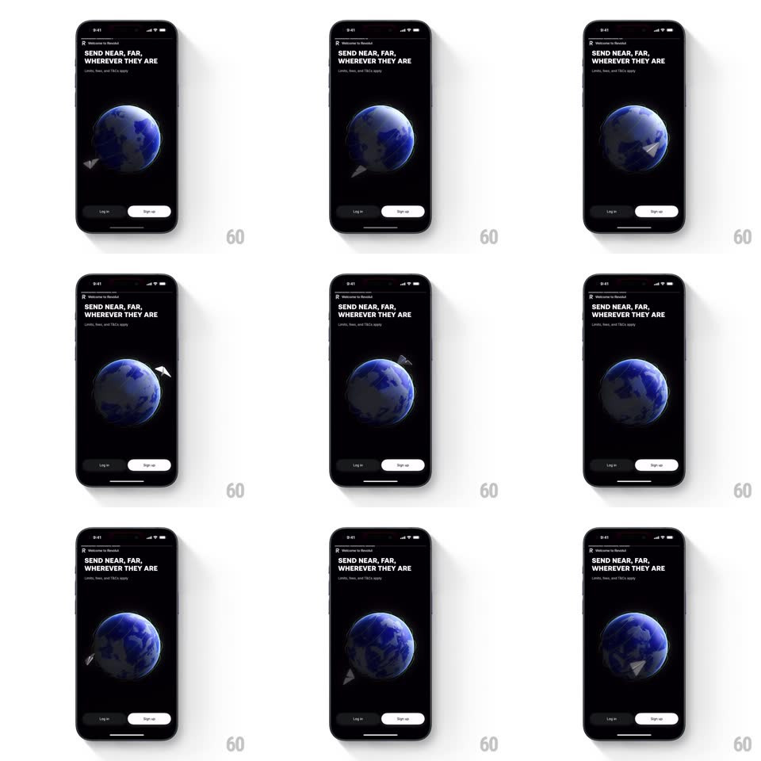

Media
Frame-by-frame

Rebuild this interaction 1:1: Revolut's plane and globe loop - on the dark "SEND NEAR, FAR, WHEREVER THEY ARE" screen, a paper airplane orbits a slowly rotating blue globe, dipping behind it and emerging on the other side.

Rebuild this interaction 1:1: Revolut's plane and globe loop - on the dark "SEND NEAR, FAR, WHEREVER THEY ARE" screen, a paper airplane orbits a slowly rotating blue globe, dipping behind it and emerging on the other side. ## Integration Integration: stack-agnostic spec - springs given as stiffness/damping, timed motions as duration + curve; map every value to your framework and animation library of choice. ## Scene A black screen: "Welcome to Revolut" eyebrow, bold headline "SEND NEAR, FAR, WHEREVER THEY ARE" with a "Limits, fees, and T&Cs apply" caption, then the hero - a deep blue 3D globe with visible continents - and "Log in" / "Sign up" pills below. ## Motion spec Pattern: orbit loop with depth occlusion. - The globe rotates slowly around its vertical axis (one turn ~20s, linear), lit from the upper right - continents drift through the light. - A white paper airplane flies an elliptical orbit tilted about 20deg: it passes in front of the globe (scaled up, ~1.1x) at the near side and shrinks (0.75x) as it rounds the back, where the globe occludes it. - One orbit takes ~5s, linear and smooth; the plane banks slightly into its turns (roll +/-15deg) and its nose follows the tangent of the path. - A faint dotted trail follows the plane on the near arc only, fading after 1s. ## Calibration - Occlusion is the depth cue - the plane must genuinely disappear behind the globe's limb. - The globe is dim (30-40% brightness) - the white plane is the brightest element. ## Reduced motion Static globe with the plane parked at the near-side arc. ## Don't miss - The plane emerges from behind the globe's edge, not from off-screen - the orbit is a closed loop. - The globe's night-side limb has a faint blue rim light.